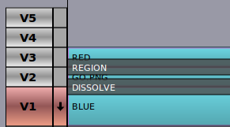

This section describes the minimal workflow for making a movie using only a single track.
Flowblade Movie Editor uses Compositors to mix images from two different tracks. By combining multiple tracks and multiple Compositors complex composite images can be achieved.
Compositors have a Source track and a Destination track.
On the Timeline Compositor is displayed as a dark rectangular object that is displayed on top of two tracks. Source track is always the one above Compositor, but Destination track may be any of the tracks below it.
Parameters defining the resulting composite are edited in the Compositors tab.
There is a subtype of Compositors called Blenders. Blenders do the standard blends like Add, Softlight and Darken, but offer no transformations, nor any method to control the amount of blend.
In this example we demonstrate how top-to-bottom Compositor order affects compositing. We are trying to make word 'GO' apperar on top of 2-color background made by combining red and blue Color Clips using 'Free Stripes' wipe.
To make alpha transparency work the GO.PNG graphic has to composited using 'Dissolve'.
Clips: RED and BLUE Color Clips and GO.PNG graphic with alpha transparency

Desired result

Here we have arranged clips on the tracks as we would arrange layers in Gimp.
Gimp style layer order

What happens here is that first 'GO.PNG' is composited on 'RED' Color Clip, and the resulting image is composited using 'Free Stripes' wipe on top of 'BLUE' Color Clip. We get the wrong result.
Wrong result

Here we have arranged clips in correct order for the desired result.
Correct layer order
Here 'RED' Color Clip is first composited using 'Free Stripes' wipe on 'BLUE' Color Clip. After that 'GO.PNG' is composited on top of the resulting image (that is already rendered on track V1) using 'Dissolve' to get final output image.
Destination track in 'Region' Compositor is V1, Source track is V3

Desired result